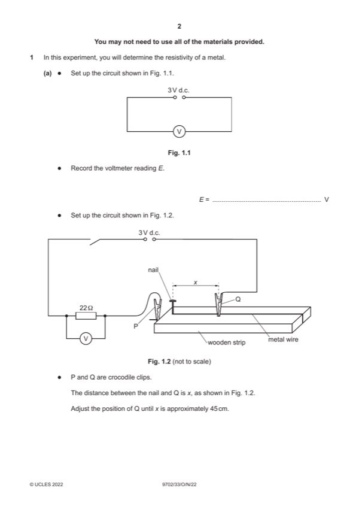

Question 1

Original paper page 2
Part 1(a) — solution
Value of E in the range 2.00–3.50 V. 1
Mark points
- Include the ideas shown in the solution above.
Part 1(b) — solution
Six sets of readings of x and V with the correct trend (V increases as x increases) and without help from the Supervisor 3
scores 3 marks, five sets scores 2 marks etc.
Range: x ⩾ 70.0 cm. 1
Column headings: 1
Each column heading must contain a quantity and a unit where appropriate.
The presentation of quantity and unit must conform to accepted scientific convention e.g. 1 / V / V–1.
Consistency: 1
All values of x must be given to the nearest millimetre.
Significant figures: 1
All values of 1 / V must be given to the same number of s.f. as (or one more than) the number of s.f. in the raw V values.
Calculation: Values of 1 / V are correct. 1
Mark points
- Include the ideas shown in the solution above.
Part 1(c)(i) — solution
Axes: 1
Sensible scales must be used, no awkward scales (e.g. 3:10 or fractions).
Scales must be chosen so that the plotted points occupy at least half the graph grid in both the x and y directions.
Axes must be labelled with the quantity that is being plotted.
Scale markings must be no more than 2 cm (one large square) apart.
Plotting of points: 1
All observations in the table must be plotted on the grid.
Diameter of plotted points must be ⩽ half a small square.
Points must be plotted to an accuracy of half a small square in both x and y directions.
Quality: 1
All points in the table must be plotted (at least 5) on the grid for this mark to be awarded.
Trend of points must be negative.
It must be possible to draw a straight line that is within 5 cm (to scale) on the x axis of all plotted points.
2022 Page 5 of 8
9702/33 Cambridge International AS & A Level – Mark Scheme October/November 2022
Mark points
- Include the ideas shown in the solution above.
Part 1(c)(ii) — solution
Line of best fit: 1
‘Best fit’ is judged by the balance of all points on the grid (at least 5) about the candidate’s line. There must be an even
distribution of points either side of the line along the full length.
Candidates do not need to identify an anomalous point. However if there is a point off trend, it may be identified as
anomalous by circling or labelling it. There must be at least 5 points left after one anomalous point is disregarded.
Lines must not be kinked or thicker than half a small square.
Mark points
- Include the ideas shown in the solution above.
Part 1(c)(iii) — solution
- Correct read-off from a point on the line and substituted into y = mx + c or an equivalent expression
- Intercept read directly from the graph, with read-off at x = 0, accurate to half a small square
Mark points
- Correct read-off from a point on the line and substituted into y = mx + c or an equivalent expression
- Intercept read directly from the graph, with read-off at x = 0, accurate to half a small square
Part 1(d) — solution
- Value of A = candidate’s gradient value and value of B = candidate’s intercept value. 1
Mark points
- Value of A = candidate’s gradient value and value of B = candidate’s intercept value. 1
Part 1(e)(i) — solution
Value of d in the range 0.290 mm–0.340 mm and all raw values given to either 0.01 mm or all to 0.001 mm with unit. 1
Measurement of d repeated. 1
Mark points
- Include the ideas shown in the solution above.
Part 1(e)(ii) — solution
correctly calculated. 1
Correct unit (e.g. m). 1
2022 Page 6 of 8
9702/33 Cambridge International AS & A Level – Mark Scheme October/November 2022
Mark points
- Include the ideas shown in the solution above.
Part 1 — solution
mark for each point up to a maximum of 4.
Mark points
- Include the ideas shown in the solution above.
Part 1 — solution
mark for each point up to a maximum of 4.
2022 Page 8 of 8
Mark points
- Include the ideas shown in the solution above.